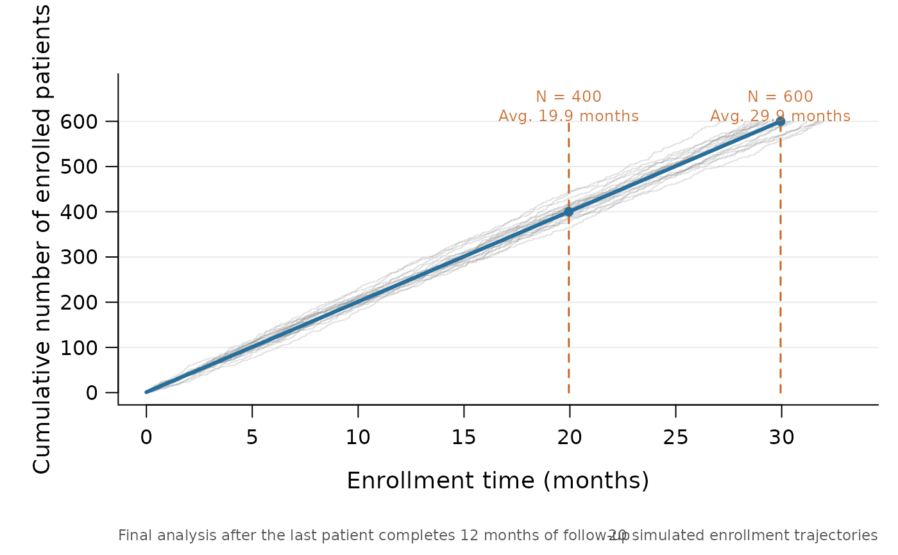
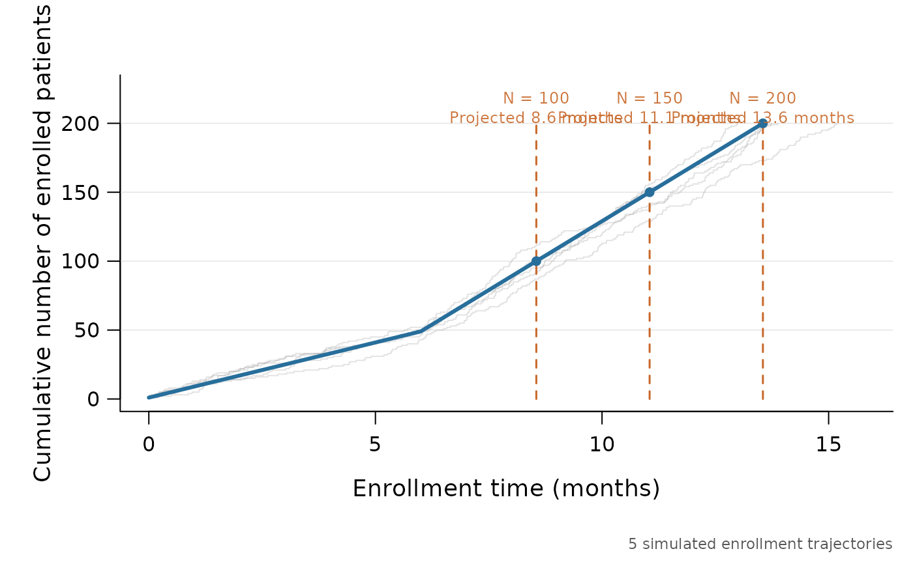

Draws the expected cumulative enrollment curve for a Goldilocks trial design, together with optional random enrollment trajectories and projected interim and maximum-sample-size milestones.
Usage
plot_enrollment(
x = NULL,
lambda = NULL,
N_total = NULL,
lambda_time = NULL,
interim_look = NULL,
end_of_study = NULL,
n_sim = 20L,
seed = NULL,
time_unit = NULL,
xlab = NULL,
ylab = "Cumulative number of enrolled patients",
main = NULL,
annotate = TRUE,
projection_col = "#276E9B",
simulation_col = "#777777",
milestone_col = "#C8682A"
)Arguments
- x
NULL(the default), or a result returned bysurvival_adapt()orsim_trials(). Results created by current versions ofgoldilocksretain the evaluated enrollment design needed by this function.- lambda
NULL(the default), or a numeric vector of finite, positive enrollment rates per unit of calendar time. It is required whenx = NULLand otherwise overrides the rates stored inx.- N_total
NULL(the default), or a positive integer giving the maximum total sample size. It is required whenx = NULLand otherwise overrides the value stored inx.- lambda_time
NULL(the default), or a numeric vector of finite, positive, strictly increasing calendar times at which the enrollment rate changes. Seeenrollment().- interim_look
NULL(the default), or a strictly increasing positive integer vector giving the cumulative enrollment at each interim look. All values must be less thanN_total.- end_of_study
NULL(the default), or a single finite, positive numeric value giving the planned follow-up time for each subject. When available andannotate = TRUE, it is reported beneath the plot.- n_sim
A single non-negative integer giving the number of random enrollment trajectories to draw. The default is
20L; use0to show only the expected enrollment curve.- seed
NULL(the default), or a single integer between0and.Machine$integer.maxfor the random trajectories. A supplied seed gives reproducible trajectories and leaves the existing random-number state unchanged.- time_unit
NULL(the default), or a non-empty character string naming the design's unit of time, such as"months"or"days".- xlab
NULL(the default), or a character string for the horizontal axis label. WhenNULL, the label is constructed fromtime_unit.- ylab
A character string for the vertical axis label. The default is
"Cumulative number of enrolled patients".- main
NULL(the default), or a character string for the main title.- annotate
A single logical value indicating whether follow-up and simulation notes should appear beneath the plot. The default is
TRUE.- projection_col
A character string specifying the colour of the expected enrollment curve. The default is
"#276E9B".- simulation_col
A character string specifying the colour of the random enrollment trajectories. The default is
"#777777".- milestone_col
A character string specifying the colour of the interim and maximum-sample-size guides. The default is
"#C8682A".
Value
Invisibly, a list containing the evaluated design, the
projection data frame, the milestones data frame, and the simulated
enrollment-time vectors in simulations.
Details
The blue projection is
\(1 + \Lambda(t)\), where \(\Lambda(t)\) is the cumulative intensity of
the piecewise-constant Poisson enrollment process. The first patient is
fixed at time zero, consistently with enrollment(). A milestone's
projected time solves \(1 + \Lambda(t) = N\). With a constant enrollment
rate this is also the mean arrival time, \((N - 1) / \lambda\). With a
piecewise rate it is an expected-count projection rather than the mean of
the corresponding arrival-time distribution.
If x supplies a stored design, explicitly supplied design arguments
override the corresponding stored values. This makes it possible, for
example, to compare a fitted design with a different enrollment rate.
Examples
plot_enrollment(
lambda = 20,
N_total = 600,
interim_look = 400,
end_of_study = 12,
n_sim = 20,
seed = 20260727,
time_unit = "months"
)

# Piecewise enrollment rates are supported.
plot_enrollment(
lambda = c(8, 20),
lambda_time = 6,
N_total = 200,
interim_look = c(100, 150),
n_sim = 5,
seed = 1,
time_unit = "months"
)
